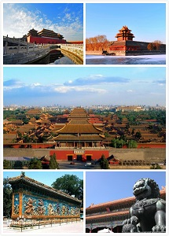
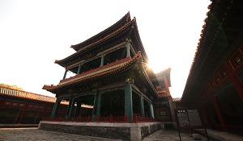
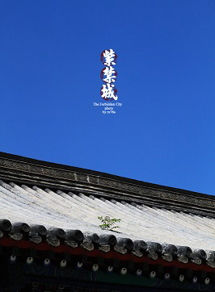
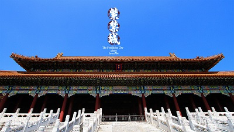
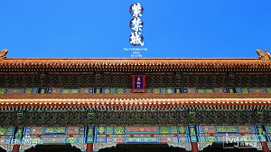
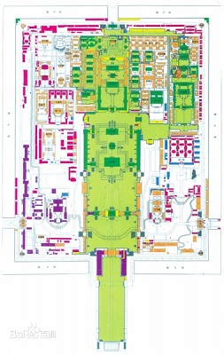
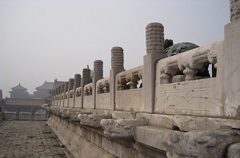
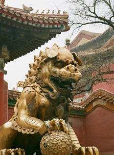
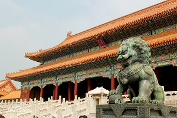

故宫
北京故宫是中国明清两代的皇家宫殿，旧称紫禁城，位于北京中轴线的中心。北京故宫以三大殿为中心，占地面积72万平方米，建筑面积约15万平方米，有大小宫殿七十多座，房屋九千余间。
北京故宫于明成祖永乐四年（1406年）开始建设，以南京故宫为蓝本营建，到永乐十八年（1420年）建成。它是一座长方形城池，南北长961米，东西宽753米，四面围有高10米的城墙，城外有宽52米的护城河。紫禁城内的建筑分为外朝和内廷两部分。外朝的中心为太和殿、中和殿、保和殿，统称三大殿，是国家举行大典礼的地方。内廷的中心是乾清宫、交泰殿、坤宁宫，统称后三宫，是皇帝和皇后居住的正宫。
北京故宫是世界上现存规模最大、保存最为完整的木质结构古建筑之一，是国家AAAAA级旅游景区， 1961年被列为第一批全国重点文物保护单位； 1987年被列为世界文化遗产。
历史沿革
名称考义
故宫又称紫禁城。 中国古代讲究“天人合一”的规划理念，用天上的星辰与都城规划相对应，以突出政权的合法性和皇权的至高性。天帝居住在紫微宫，而人间皇帝自诩为受命于天的“天子”，其居所应象征紫微宫以与天帝对应，《后汉书》载“天有紫微宫，是上帝之所居也。王者立宫，象而为之”。 紫微、紫垣、紫宫等便成了帝王宫殿的代称。由于封建皇宫在古代属于禁地，常人不能进入，故称为“紫禁”。明朝初期同外禁垣一起统称“皇城”，大约明朝中晚期，与外禁垣区分开来，即宫城叫“紫禁城”，外禁垣为“皇城”。
营建原则
故宫严格地按《周礼·考工记》中“前朝后市，左祖右社”的帝都营建原则建造。整个故宫，在建筑布置上，用形体变化、高低起伏的手法，组合成一个整体，在功能上符合封建社会的等级制度。同时达到左右均衡和形体变化的艺术效果。
中国建筑的屋顶形式是丰富多彩的，在故宫建筑中，不同形式的屋顶就有10种以上。以三大殿为例，屋顶各不相同。故宫建筑屋顶满铺各色琉璃瓦件。 主要殿座以黄色为主。绿色用于皇子居住区的建筑。其它蓝、紫、黑、翠以及孔雀绿、宝石蓝等五色缤纷的琉璃，多用在花园或琉璃壁上。太和殿屋顶当中正脊的两端各有琉璃吻兽，稳重有力地吞住大脊。吻兽造型优美，是构件又是装饰物。一部分瓦件塑造出龙凤、狮子、海马等立体动物形象，象征吉祥和威严，这些构件在建筑上起了装饰作用。
建造过程
中国建筑的屋顶形式是丰富多彩的，在故宫建筑中，不同形式的屋顶就有10种以上。以三大殿为例，屋顶各不相同。故宫建筑屋顶满铺各色琉璃瓦件。 主要殿座以黄色为主。绿色用于皇子居住区的建筑。其它蓝、紫、黑、翠以及孔雀绿、宝石蓝等五色缤纷的琉璃，多用在花园或琉璃壁上。太和殿屋顶当中正脊的两端各有琉璃吻兽，稳重有力地吞住大脊。吻兽造型优美，是构件又是装饰物。一部分瓦件塑造出龙凤、狮子、海马等立体动物形象，象征吉祥和威严，这些构件在建筑上起了装饰作用。
永乐四年（1406年），明成祖下诏以南京皇宫（南京故宫）为蓝本，兴建北京皇宫和城垣。朱棣先派出人员，奔赴全国各地去开采名贵的木材和石料，然后运送到北京。光是准备工作，就持续了11年。珍贵的楠木多生长在崇山峻岭里，百姓冒险进山采木，很多人为此丢了性命，后世留下了“入山一千，出山五百”来形容采木所付出的生命代价。开采修建宫殿的石料，同样很艰辛。保和殿后那块最大的丹陛石，开采于北京西南的房山。史书记载了运送它时的情景：数万名劳工在道路两旁每隔一里左右掘一口井，到了寒冬腊月气温足够低时，就从井里汲水泼成冰道，用了28天的时间，才送到了宫里。此外，还要在苏州烧制专供皇家建筑使用的方砖——金砖，山东临清也要向北京运送贡砖。
永乐七年（1409年），明成祖以北京为基地进行北征，同时开始在北京附近的昌平修建长陵。 将自己的陵墓修在北京而不是南京，证明明成祖已经下定决心要迁都。
永乐十四年（1416年），明成祖召集群臣，正式商议迁都北京的事宜。对于提出反对意见的臣工，明成祖一一革职或严惩，从此无人再敢反对迁都。 次年，以南京紫禁城为模板的北京紫禁城正式动工。永乐十八年（1420年），北京皇宫和北京城建成。北京皇宫以南京皇宫为蓝本，规模稍大。新修的北京城周长四十五里，呈规则的方形，符合《周礼·考工记》中理想的都城的形制。明成祖下诏正式迁都，改金陵应天府为南京，改北京顺天府为京师，但在南京仍设六部等中央机构，称南京某部，以南京为留都。
明朝时期
紫禁城建成后，明清宫廷五百多年的历史，包含了帝后活动，等级制度、权力斗争、宗教祭祀等。永乐十八年（1420年），北京宫殿竣工。次年发生大火，前三殿被焚毁。正统五年（1440年），重建前三殿及乾清宫。天顺三年（1459年），营建西苑。经历永乐、洪熙、宣德、正统四代，整20年。
嘉靖三十六年（1557年），紫禁城大火，前三殿、奉天门、文武楼、午门全部被焚毁。至嘉靖四十年（1561年）才全部重建完工。 嘉靖时期，故宫三大殿名称改为皇极殿、中极殿、建极殿。
万历二十五年（1597年），紫禁城大火，焚毁前三殿、后三宫。复建工程直至天启七年（1627年）方完工。 在明朝，乾清宫是皇帝的主要寝宫，也是主要政治活动场所。自永乐皇帝朱棣至崇祯皇帝朱由检，共有14位皇帝曾在此居住。由于宫殿高大，空间过敞，皇帝在此居住时曾分隔成数室。据记载，明代乾清宫有暖阁9间，分上下两层，共置床27张，后妃们得以进御。由于室多床多，皇帝每晚就寝之处很少有人知道，以防不测。皇帝虽然居住在迷楼式的宫殿内，且防范森严，但仍不能高枕无忧。据记载，嘉靖年间发生“壬寅宫变”后，世宗移居西苑，不敢回乾清宫居住。万历帝的郑贵妃为争皇太后闹出的“红丸案”、泰昌妃李选侍争做皇后而移居仁寿殿的“移宫案”，都发生在乾清宫。明代乾清宫也曾作为皇帝守丧之处。
清朝时期
崇祯十七年（清顺治元年，1644年），李自成军攻陷北京，明朝灭亡，但李自成很快被清军在山海关击败。李自成向陕西撤退前焚毁紫禁城，仅武英殿、建极殿、英华殿、南薰殿、四周角楼和皇极门未焚，其余建筑全部被毁。五月初二，清军进入北京，紫禁城被清军接管。 同年十月，清世祖顺治帝迁都北京。十月初一，顺治帝在太和门向全国颁布登基诏书，清王朝正式定都北京。此后历时14年，将中路建筑基本修复。
康熙二十二年（1683年），开始重建紫禁城其余被毁部分建筑，至康熙三十四年（1695年）基本完工。 清朝入关之后，依照明朝的旧例，顺治帝和康熙帝都将乾清宫作为居住和处理朝政的主要场地。雍正帝即位之后，开始移居养心殿。养心殿位于紫禁城内廷、乾清宫西侧，始建于明朝嘉靖年间。起初，它并不是皇帝的寝宫。清康熙时期，内务府在此设置专为皇室造办宫廷活计的诸多作坊，称“养心殿造办处”。康熙六十一年（1722年），康熙皇帝去世后，即位的雍正皇帝并没有搬到乃父的寝宫乾清宫去住，而是将西侧遵义门内暂时用作为父守孝之“苫次”的养心殿辟为皇帝寝宫。 从此，养心殿开始成为皇帝居住和清朝朝政的主要处理地点，此后军机处设立之后办公地点也在养心殿附近。乾隆帝即位之后，对养心殿殿区进行了大规模的扩建和改建，逐渐形成了一定的规制。从雍正帝之后，乾隆、嘉庆、道光、咸丰、同治、光绪、宣统八位皇帝都在此居住。一直到宣统帝被赶出紫禁城。
咸丰帝在位时期，也曾把长春宫与前面的启祥宫（即现在的太极殿）打通，连为一体，咸丰去世后，慈禧也曾在这里居住，一人独享两宫。西六宫到了晚清的时候，慈禧开始改造某些宫殿。因此，西六宫中有四个宫都留下了慈禧的足迹。 咸丰帝死后，慈安和慈禧早期垂帘听政时，都曾居住在长春宫，同治十年（1871年），慈安从长春宫搬回钟粹宫居住，长春宫便成为慈禧太后一人独享的宫院。太极殿原来也只是二进院落，咸丰改修长春宫时，将太极殿后殿辟为穿堂殿，使太极殿与长春宫连接成相互贯通的四进院。
民国时期
宣统三年（1911年）辛亥革命后，紫禁城宫殿本应全部收归国有，但按照那时拟定的《清室优待条件》，逊帝爱新觉罗·溥仪被允许“暂居宫禁”，即“后寝”部分。侍卫人等照常留用；王公世爵仍其旧”等条款。所以依据《清室优待条件》部分条款，加之袁世凯感念旧主恩德，积极扶持，溥仪退位后，帝制虽然被废除，但皇帝溥仪以及原来的皇室大臣等却仍然安然无恙地居住在皇宫里。在皇宫紫禁城内生活期间，溥仪仍旧发布“上谕”，仍用宣统年号纪年，遗老遗少仍行跪拜大礼。宫内依然还保有内务府、宗人府和慎刑司等机构，故臣赠谥，不改衣冠，触犯王法者由慎刑司处治。遂使当时的紫禁城俨然成为“国中之国”。
1917年7月1日，徐州军阀张勋拥立清逊帝溥仪复辟。为了让张勋投降，段祺瑞发动了一切可以发动的力量，其中包括命令北京南苑航空学校的师生加入战斗，用飞机轰炸紫禁城。在紫禁城内投下三枚小炸弹，以示警告 。飞机距紫禁城的高度只有300米，超低空飞行。 炸到了紫禁城东六宫当中的延禧宫，使当时的建筑轻度损坏。这被认为是东亚第一次空袭轰炸。
1924年，冯玉祥发动“北京政变”，将溥仪逐出宫禁，同时成立“清室善后委员会”，接管了故宫。于1925年10月10日宣布故宫博物院正式成立，对外开放。1925年以后紫禁城才被称为“故宫”。随着清王朝的没落，特别是1949年前的38年中，故宫建筑日渐破败，有多处宫殿群倒塌，垃圾成山。
抗日战争全面爆发前夕，1933年，故宫博物院为保护其文物安全，不至遭战火毁灭或被日本帝国主义掠夺，决定采取文物避敌南迁之策，并在南京建立文物库房，成立故宫博物院南京分院。从1933年2月至5月，先后检选出文物、图书、档案13427箱又64包，分五批先运抵上海，后又运至南京 。
现代状况
1949年中华人民共和国成立以后，对故宫建筑进行了大规模的修缮，同时整理出大量的文物。1961年国务院颁布故宫为全国重点文物保护单位。故宫博物院现存文物1862690件/套（截至2019年8月） 。 1987年故宫被联合国教科文组织列为“世界文化遗产”，辟为“故宫博物院”。
21世纪以来，故宫博物院平均每年接待中外观众600—800万人次。随着旅游事业的发展，观众的人数有增无减，可见人们对紫禁城的兴趣长盛不衰。
2013年8月15日，寿康宫在进行原状陈列后，也正式展出。而位于慈宁宫的雕塑馆在2015年5月31日开馆。而按照2015年规模，到2020年故宫的开放面积将达76%。紫禁城正在进行文物古迹修缮、环境整治、扩大陈列展览的开放区域。
2014年11月23日，北京故宫吉祥物首度对外亮相，该吉祥物源自中国传统的吉祥龙凤形象，分别为龙“壮壮”和凤“美美”。2015年10月11日，故宫博物院正式对观众开放慈宁宫区域、午门雁翅楼区域、东华门等新的区域，使故宫的开放面积由目前的52%增加至65%。
2016年2月25日下午，在人民大会堂由故宫博物院主办“太璞如琢——崔如琢艺术故宫大展”。 2016年4月12日，故宫博物院院长单霁翔介绍，故宫的开放面积再增11%，达76%，并开放多种形式的新展览。同时，“洛阳牡丹与故宫博物院牡丹题材文物联展”在故宫开幕。有1.2万盆从洛阳抵京的牡丹被分散布置于慈宁宫花园、乾清门广场、慈宁宫、寿康宫、永康左门—右门、隆宗门外等区域，重现了清代紫禁城牡丹花开盛况。
2018年5月24日，故宫博物院决定自2018年6月开始实行周一全天闭馆，国家法定节假日除外。 此外，2012年1月至2018年6月，故宫累计接待观众达到1亿人次，2019年起，故宫试行分时段售票 。
2018年9月3日，故宫养心殿正式进入古建筑研究性保护修缮工作的实施阶段。
2019年3月4日，故宫公布了2019年下半年展览计划。
2019年9月21日至10月1日，据故宫博物院消息，根据工作需要和安排，故宫博物院暂停对社会开放。
2019年10月2日，故宫“休整”11天后开门迎客，3日至5日门票售罄。
建筑形制
建筑规模
北京故宫由明朝皇帝朱棣始建，设计者为蒯祥（1397-1481年，字廷瑞，苏州人）。占地72万平方米（长961米，宽753米），建筑面积约15万平方米，占地面积72万平方米，用100万民工，共建了14年，有房屋9999间半，实际据1973年专家现场测量故宫有大小院落90多座，房屋有980座，共计8707间（注：此“间”并非现今房间之概念，而是指四根房柱所形成的空间）。
建筑造型
故宫前部宫殿，当时建筑造型要求宏伟壮丽，庭院明朗开阔，象征封建政权至高无上，太和殿坐落在紫禁城对角线的中心，四角上各有十只吉祥瑞兽。故宫的设计者认为这样以显示皇帝的威严，震慑天下。后部内廷却要求深邃、紧凑，因此东西六宫都自成一体，各有宫门宫墙，相对排列，秩序井然。内廷之后是宫后苑 。
故宫宫殿是沿着一条南北向中轴线排列，三大殿、后三宫、御花园都位于这条中轴线上。并向两旁展开，南北取直，左右对称。这条中轴线不仅贯穿在紫禁城内，而且南达永定门，北到鼓楼、钟楼，贯穿了整个城市 。
建筑布局
整体格局
故宫位于北京城中心，布局依据《周礼·考工记》中所载：“左祖、右社、面朝、后市”的原则，建筑在北京城南北长八公里的中轴线上，南北取直，左右对称。如今故宫左前面的劳动人民文化宫，明清是皇帝祭祀祖宗的太庙；右前面的中山公园是皇帝祭祀土神和谷神的社稷坛；前面有朝臣办事的处所；后面有人们进行交易的市场。北京故宫的北面是万岁山，南面是金水河，恰好符合古人“负阴抱阳，冲气为和”的建宫原则，万岁山是专门为营造皇城风水而筑城的一座人工山，完成于明初，位于元代寝宫延春阁旧址，用开挖护城河和南湖的淤泥堆积而成。此山的堆筑，一方面满足了皇城要“负阴”的原则，另一方面又镇住了前朝的风水，故万岁山又有“镇山”之称。 北京四九城的布局是二龙出水护着紫禁城。依照中国古代星象学说，紫微星（即北极星）位于中天，乃天帝所居，天人对应，是以皇帝的居所又称紫禁城。
故宫宫城周围环绕着高12米，长3400米的宫墙，形式为一长方形城池，墙外有52米宽的护城河环绕，形成一个森严壁垒的城堡。故宫有4个门，正门名午门，东门名东华门，西门名西华门，北门名神武门。面对北门神武门，有用土、石筑成的景山。在整体布局上，景山可说是故宫建筑群的屏障。
故宫南北长约960米，东西宽约750米，面积72万多平方米，现存房屋8000多间。它周围有高10米的城墙，墙外有宽52米的护城河。四面各有一座门，南为午门、北为神武门、东为东华门、西为西华门。紫禁城内由外朝、内廷两大部分组成。外朝以太和殿、中和殿、保和殿为中心，东有文华殿，西有武英殿为两翼，是朝廷举行大典的地方。外朝的后面是内廷，有乾清宫、交泰殿、坤宁宫、御花园以及东、西六宫等，是皇帝处理日常政务和皇帝、后妃们居住的地方。此外，东侧还有宁寿宫区域，是清朝乾隆皇帝为做太上皇退位养老之所。
外朝分布
外朝是皇帝处理政事的地方，主要有三大殿：太和殿、中和殿、保和殿。其中太和殿最为高大、辉煌，它宽60.1米，深33.33米，高35.05米。皇帝登基、大婚、册封、命将、出征等都要在这里举行盛大仪式，其时数千人“三呼万岁”，数百种礼器钟鼓齐鸣，极尽皇家气派。太和殿后的中和殿是皇帝出席重大典礼前休息和接受朝拜的地方，最北面的保和殿则是皇帝赐宴和殿试的场所。
故宫内廷
故宫建筑的后半部叫内廷，内廷宫殿的大门——乾清门，左右有琉璃照壁，门里是后三宫。
内廷以乾清宫、交泰殿、坤宁宫为中心，东西两翼有东六宫和西六宫，是皇帝处理日常政务之处也是皇帝与后妃居住生活的地方。后半部在建筑风格上不同于前半部。前半部建筑象征皇帝的至高无上。后半部内廷建筑多是自成院落。
在故宫“内庭”最后面。重檐庑殿顶。坤宁宫是明朝及清朝雍正帝之前的皇后寝宫，两头有暖阁。清代改为祭神场所。雍正后，西暖阁为萨满的祭祀地。其中东暖阁为皇帝大婚的洞房，康熙、同治、光绪三帝，均在此举行婚礼 。
馆藏文物
总体馆藏
北京故宫藏有大量珍贵文物，据统计总共达1862690件之多 ，统称有文物100万件，占中国全国文物总数的1/6。截至2005年12月31日，中国文物系统文物收藏单位馆藏一级文物的总数已达109197件，现已全部在国家文物局建档备案。在全国保存一级文物的1330个收藏单位中，故宫博物院以8273件（套）高居榜首，并收有很多绝无仅有的国宝。故宫的一些宫殿中设立了综合性的历史艺术馆、绘画馆、分类的陶瓷馆、青铜器馆、明清工艺美术馆、铭刻馆、玩具馆、文房四宝馆、玩物馆、珍宝馆、钟表馆和清代宫廷典章文物展览等，收藏有大量古代艺术珍品，是中国收藏文物最丰富的博物馆。故宫博物院在1949年以后进一步丰富了馆藏，截至到2017年，文物总数达到1862690件 ，其中珍贵文物1684490件、一般文物115491件、标本7577件 。
经典藏品
- 绘画：故宫博物院藏元代及以前绘画近420件， 其中17件入选国家文物局《第二批禁止出国（境）展览文物目录（书画类）》。故宫藏有诸多中国绘画史上的孤品、绝品。如东晋顾恺之《洛神赋图》、隋展子虔《游春图》、唐阎立本《步辇图》等。
- 书法：故宫博物院藏元代及以前书法310件，其中11件入选国家文物局《第二批禁止出国（境）展览文物目录（书画类）》。故宫藏有诸多中国书法史上的孤品、绝品。如东晋王献之《中秋帖》、东晋王珣《伯远帖》卷等。
- 瓷器：北京故宫拥有35万件陶瓷器，包括一级品1100多件，二级品约5.6万件，另有从全国200多个窑口所采集的3.6万余片陶瓷标本。收藏特色尤其体现在三国至唐五代陶瓷器、元瓷、清中晚期御窑、宫廷陈设用瓷、紫砂器、多釉彩大型瓷器、清御窑生产资料、历代民窑瓷器和考古发掘资料。
- 铜器：故宫藏历代铜器1.5万余件（不包括钱币和铜镜），其中先秦青铜器约1万件，有铭文的1600余件这三个数量均占中外传世与出土数量总和的十分之一以上，故宫是世界上收藏中国青铜器数量最多的博物馆。另有历代钱币1万余枚、铜镜4000面、印押1万余件。故宫青铜器馆设在承乾宫和永和宫。
- 玉器：故宫藏玉器28461件，涵盖中国主要历史时期，尤以清代宫廷玉器为收藏特色。故宫玉器馆设在东六宫的钟粹宫。
- 钟表：故宫收藏中外钟表1500多件，外国钟表包括英国、法国、瑞士、美国、日本所产精品，体现了18世纪至20世纪初世界钟表制造业的最高水平。故宫钟表馆设在奉先殿。
- 甲骨文：故宫博物院所藏甲骨总数，20世纪60年代调查粗估有22463片，占世界现存殷墟甲骨总数的18%，仅次于国家图书馆（34512片）和台湾历史语言研究所（25836片）。
- 诗作：2014年7月，故宫博物院在清理文物时，工作人员在库房里发现了两个箱子，上面写着“乾隆诗稿”，打开后，竟然是乾隆皇帝的2.8万首诗的诗稿。过去库房里有1.7万多首乾隆的诗，加上这次的发现，有4万多首。史传乾隆皇帝喜欢吟诗作赋，一生写了4万多首诗作。
文物保护
2015年，故宫与中国建筑设计研究院建筑历史研究所合作编制的《故宫保护总体规划》面世并征询意见。《规划》的保护对象为故宫及其产权归属单位，包括紫禁城、端门、大高玄殿、皇史宬和稽查内务府御史衙门，共5处明清皇家建筑群，总占地面积为106公顷。规划范围与故宫的世界文化遗产缓冲区，即故宫周边区域等同，预计于2025年实现目标。
故宫以1500万人次的年接待观众数量，位居世界所有博物馆和世界文化遗产之首。自2015年6月13日起，故宫试行每日限流8万人与实名制售票。
2016年8月22日，故宫在京宣布养心殿研究性修复项目科研课题全面启动。养心殿研究性修复项目是中国首个可移动文物与不可移动文物的综合研究性修复项目，故宫博物院将以此项目为契机，通过机制创新，建立文化遗产修复的科学规范，在国内创立文物修复与保护的典范。
作用价值
博物作用
故宫博物院的创立，具有两方面的意义：其一是民主革命的又一胜利，是对复辟势力的一次致命打击；其二是中国文化艺术史上的一个伟大业绩。民国十四年（1925年）10月10日举行故宫博物院成立典礼。博物馆是以文化教育为目的，收藏、研究、展示和保存实物的机构。将作为君主法统象征和仅供皇帝观赏享用的珍贵文物，变为全民族的共有财富。故宫博物院成立时，就制定了《故宫博物院临时理事会章程》。民国十七年（1928年），国民政府颁布了《故宫博物院组织法》，这是中国历史上第一部有关博物馆的法律，后来又颁布了《中华民国故宫博物院理事会条例》。这两份文件在故宫博物院的发展史上具有十分重要的意义，标志着博物院已由草创走向成熟，也是中国博物馆事业走上正轨的开端。
遗产价值
1987年，北京故宫被列入世界文化遗产。世界遗产组织对故宫的评价是：“紫禁城是中国五个多世纪以来的最高权力中心，它以园林景观和容纳了家具及工艺品的9000个房间的庞大建筑群，成为明清时代中国文明无价的历史见证。”
故宫成为世界文化遗产，使人们对故宫古建筑价值的认识有了深化。故宫所代表的是已经成为历史的文化，而且有着宫廷文化的外壳，同时它却代表了当时的主流文化，经过了长时期的历史筛选和积累，当然不能简单用“封建落后”来概括。故宫和博物院不是毫不相干或对立的，而是有机的统一，相得益彰。把它们结合起来，就可看到，故宫博物院是世界上极少数同时具备艺术博物馆、建筑博物馆、历史博物馆、宫廷文化博物馆等特色，并且符合国际公认的“原址保护”、“原状陈列”基本原则的博物馆和文化遗产。世界文化遗产的基本精神是文化的多样性，从世界文化遗产的角度，人们努力挖掘和认识故宫具有的突出的和普世的价值。
“文化遗产”观念的引入，突破了传统的“文物”观念的局限性，强化着遗产的环境意识、共享意识，以及全社会都必须承担管理和保护的理念，促使人们从“大故宫”的观念来看待故宫保护。这在故宫保护中得到了充分体现。不仅要保护故宫本身，还要保护它的环境。过去只重视对故宫本身的保护，后来认识到与皇宫连在一起的护城河也是皇宫的当然组成部分，必须治理，于是就有了20世纪90年代投资6亿元人民币、费时三年的护城河治理，改变了长期存在的脏、乱、差面貌。根据世界遗产委员会的要求，在文化遗产地的周边必须划定“缓冲区”，以保护其周边原有的历史风貌和环境。2007年5月，在北京召开的“东亚地区文物建筑保护理念与实践国际研讨会”通过的《北京文件》，对中国遗产保护的政策和原则给予很高评价，对故宫等世界遗产地的修缮给予充分的肯定，这是对不同文化背景的世界遗产及其特色的保护方式的尊重。
学术价值
故宫学是故宫博物院于2003年提出的，它是以北京故宫及其丰富收藏为研究对象的一门科学。故宫学研究主要包括紫禁城宫殿建筑群、文物典藏、宫廷历史文化遗存、明清档案、清宫典籍及故宫博物院的历史六个方面，有着丰富深邃的学科内涵。故宫文化是以皇帝、皇权、皇宫为核心的皇家文化。故宫学的提出并确立将使其研究进入自觉阶段，从整体上提高故宫学研究的水平。
从故宫学的视野看待故宫，不仅认识到故宫古建筑、宫廷文物珍藏的重要价值，而且看到宫廷历史遗存有着同样重要的意义；更为重要的是，古建筑、文物藏品、历史遗存以及在此发生过的人和事，是一个不可分割的文化整体。这一认识是故宫学得以产生的重要依据，也有利于进一步挖掘故宫的历史文化内涵。故宫文化的这一整体性，也使流散在院外、海外、国外的清宫旧藏文物、档案文献有了一个学术上的归宿。基于此，两岸故宫博物院在学术研究上的交流与合作就是不可避免的，人为地阻隔只能是暂时的，事实上这种交流也是在不断地发展。